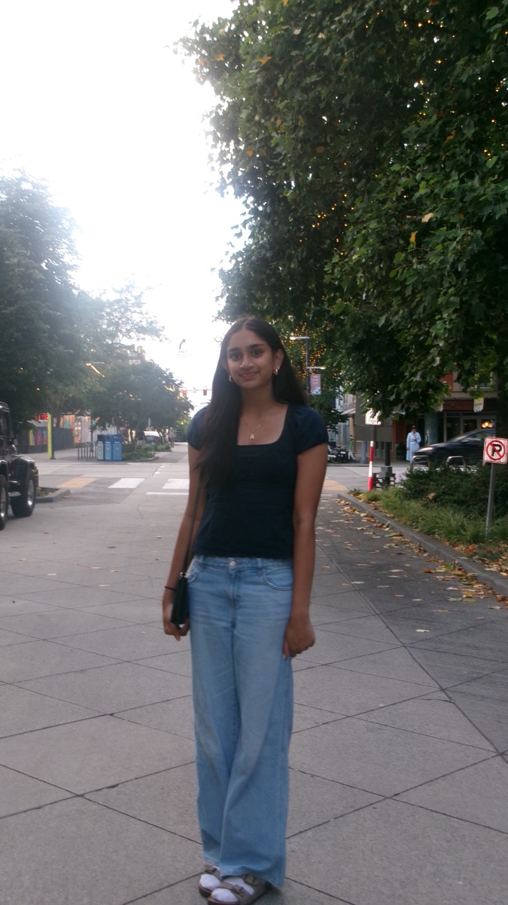

Founder / Executive Director
Anushka Dabke
Anushka Dabke is a student at Eastlake High School in Sammamish, Washington passionate about computer engineering, artificial intelligence, and technological innovation. As the Founder of Girls In CS, she established a youth-led organization to create a supportive community for high school girls pursuing computer science, recognizing the lack of accessible spaces and mentorship for young women in the field. Through the organization, she leads educational initiatives, manages a student officer board, and builds partnerships with industry professionals and STEM organizations. She has also developed a medical technology initiative incorporating machine learning and conducted research on biomarkers. Outside of academics, she is a varsity badminton player and aspires to pursue computer engineering.